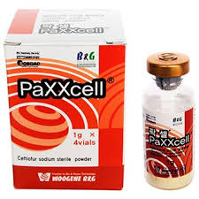

Composition
Each g contains
Ceftiofur sodium 1,000 mg
Indications
For treatment of respiratory diseases (shipping fever, pneumonia), mastitis, metritis, foot rot etc for bovine.
Pneumonia for sheep and goat.
Marek’s , Escherichia coli, staphylococcus infection in poultry.
It also effective against gram-positive and gram-negative bactria.
Dosage & Administration
For large Animals (Cattle & Horse): 1-2 ml/50 kg body weight
For Small Animals (Calf & Goat): 0.5-1 ml/10 kg body weight
For Pet Animals (Dogs, Cats): 0.5-1 ml/10 kg body weight
Day-Old Chicks: 0.08-0.20ml per chick.
For intramuscular and subcutaneous use only.
Preparation for solutions
For intramuscular & subcutaneous injection: 1 gram vial -Reconstitute with 20 ml Sterile water and 4 gram vial- Reconstitute with 80 ml Sterile water for Injection.
Contraindications/ Precautions
As with all drugs, the use of Ceftiofur Sodium sterile powder is contraindicated in animals previously found to be hypersensitivity to the drug.
Precautions
The effect of Ceftiofur on the reproductive performance, pregnancy and lactation of cattle,sheep & goat have not been determined.
Side effect
The use of Ceftiofur may result in some sign of immediate and transient local pain to the animal.
Drug withdrawal period
Cattle: 3 days, Milk 12 hours
Storage
Storage: Store at room temperature below 25⁰ c.
Sterile Solution: 2- 8⁰ c use within 7 days.
15 – 30⁰c use within 12 hrs.
Frozen use within 8 weeks.
Pack size
1 gm x 4 vials with 20 ml distilled water.